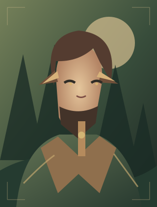
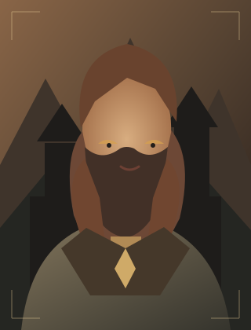
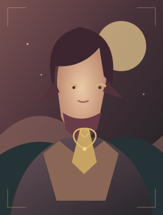

A Maldição de Valdora
Uma névoa antiga esconde segredos nas florestas do norte.
4 viajantesPróxima sessão · Sáb, 24 out

SEU SALÃO DE AVENTURAS
Reúna sua companhia, abra o grimório e descubra quem você será quando a jornada começar.
RELATOS DA COMPANHIA
FOLHAS DO GRIMÓRIO
Carregando personagens da API local…

Patrulheira · A Maldição de Valdora

Guerreiro · A Maldição de Valdora

Bruxa · Marés de Cinza
A PRIMEIRA PÁGINA AINDA ESPERA
Todo grande grupo começa com uma única história. Crie seu primeiro aventureiro para preencher este grimório.
ATELIÊ DE HERÓIS · PROTÓTIPO LOCAL
Nome, linhagem, classe e nível são enviados à API. Retrato, atributos e história ainda não são salvos.
PÁGINA I · IDENTIDADE
Toda aventura começa com um nome e uma escolha de caminho.
Uma guerreira humana une disciplina e adaptabilidade. Esta descrição é narrativa e demonstrativa.
PÁGINA II · APARÊNCIA
O retrato acompanha a classe escolhida. Acrescente um traço marcante para completar a identidade visual.
As artes de classe são imagens demonstrativas fornecidas localmente. O retrato não é enviado nem salvo no servidor.
PÁGINA III · ATRIBUTOS
Valores ilustrativos para compor a prévia da ficha. Não representam regras oficiais de uma edição de D&D.
Ajuste os números de 3 a 20. Modificadores, bônus raciais e regras de classe não são calculados.
PÁGINA IV · HISTÓRIA E REVISÃO
Uma boa história ainda não precisa de um final. Deixe uma primeira inscrição.
RESUMO DA INSCRIÇÃO